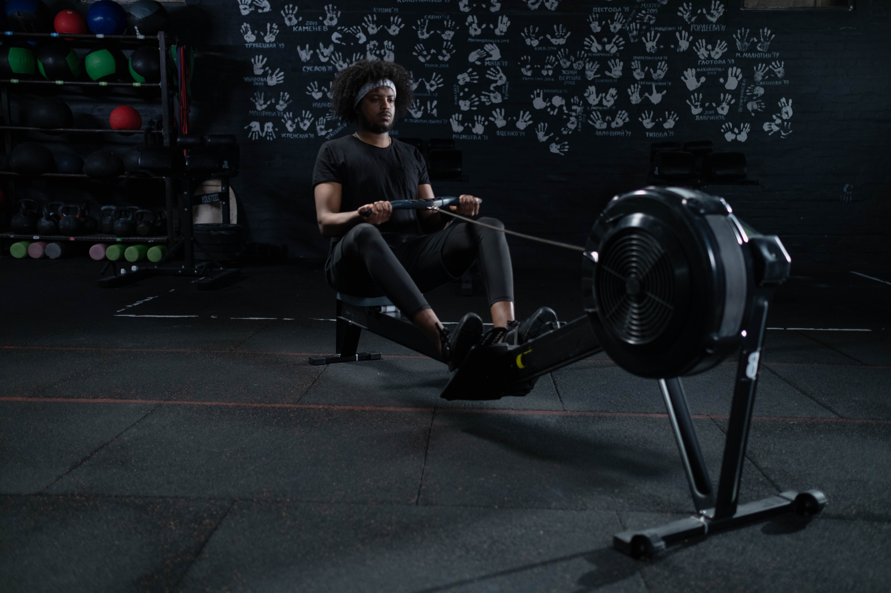

For people who want to be bigger we have varity of machine that meke your mascle bigger. Machine training is much safer than free weight training. The "machine" looks a bit ostentatious, so it feels a bit dangerous, but it's designed to allow only certain movements, so you can train safely. In free weight training, you support weights such as dumbbells and barbells yourself, so when you push yourself to the limit, you lose strength and hit your body unexpectedly, and you are prone to injuries. If you think so, machine training can be trained with peace of mind. There are various reasons for working on muscle training.



Going to gym is changing your life
Want to have a toned body! Want to build my muscles efficiently! Want to the body of my dreams! Want to be like a model! We will make your dream come true!!
Join Us